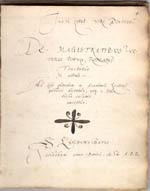

Justus Lipsius 1606 – 2006
Samenstelling: Jeanine de Landtsheer en A.Th. Bouwman
De webpresentatie behandelt de volgende onderwerpen:
3. Lipsius en het universitaire onderwijs
De praktische organisatie van de prille Leidse universiteit liet nog veel te wensen over. Gelukkig bleek al spoedig dat Lipsius niet alleen wetenschappelijke competenties bezat, maar ook als manager over grote talenten beschikte. Nadat hij in 1579 tot rector was benoemd, stelde hij meteen een aantal praktische maatregelen voor. Waarschijnlijk was hij degene die de vergaderingen van de rector met de professoren in de Acta Senatus liet notuleren. Hij liet ook een register van studenteninschrijvingen aanleggen en suggereerde (onder meer in verband met de vrijstelling van belasting op bier en wijn) een jaarlijkse recensie van wie er nog studeerde – waarbij vaak het huisadres van de student werd aangetekend. Als hoogleraar wilde Lipsius niet alleen kennis overdragen maar zijn studenten ook moreel vormen; herhaaldelijk nam hij studenten als kostganger bij zich in huis, of hij volgde hun vorderingen van zeer nabij.
|
3.1 || Album studiosorum, 1575-1618. Manuscript. [ASF 7]. –– Foliant aangeschaft op initiatief van Lipsius voor de inschrijving van nieuwe studenten in Leiden. De losse lijsten over 1575-1579 werden verzameld en genoteerd door een klerk (p. 1-8); in februari 1580 begint Lipsius na de aanvaarding van zijn tweede rectoraat de studenten eigenhandig in te schrijven (p. 9). |
|
3.2 || J. Lipsius, Epistolarum selectarum Centuria prima.Leiden: C. Plantijn, 1586. [186 D 30]. –– Epistola 89 is een uitgave van Lipsius’ brief aan de nieuwe curator Paulus Buys, gedateerd 12 juli 1583, over de oprichting van een college voor begaafde maar behoeftige studenten uit Holland, en over de zwakke positie van de filosofie in het onderwijsprogramma. |
|
|
3.3 || Collegedictaat van J. Lipsius, De magistratibus veteris populi Romani; Epistolica institutio. Genoteerd door Anthonius Persijn, 1586, 1587. Manuscript. [BPL 2783]. –– Persijn maakte dit netafschrift van een college uit 1584 voor zijn oom. Achter de tekst van Persijn is een tweede dictaat bijgebonden van een college uit 1587, gewijd aan de Epistolica institutio. |
|
|  | |
3.4 || L. Annaeus Seneca, De divina providentia ... liber.Leuven: J. Masius, 1599. [761 D 11]. –– Deze schooluitgave, zij het uit zijn Leuvense periode, illustreert hoe Lipsius voor zijn colleges zijn tekst uitvoerig bewerkte met allerlei geheugensteuntjes, opmerkingen bij bepaalde woorden en citaten uit andere auteurs. |
|
| vorige pagina | volgende pagina |